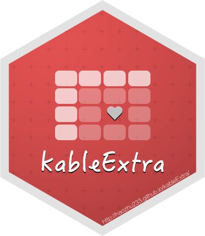

9 表のデザイン
9.1 kableExtra による表のスタイルのカスタマイズ

kableExtra パッケージは knitr::kable の拡張であり, 様々なスタイルの表を出力できる. そしてそれは HTML でも PDF でも有効である.
まず, knitrExtra::kbl() は既に紹介した kable() のラッパであり, 内部で呼び出すのは kable() のため booktabs といった従来の引数が使える上に, オプション設定の構文がより分かりやすくなっている. さらに kableExtra の独自機能として, 表 9.1 にみられるように条件書式のような装飾が可能である19.
colnames_mtcars_ja <- c("ガロン毎マイル", "シリンダ",
"排気量", "総馬力", "ギア比", "重量", "加速性能",
"トランスミッション", "ギア数", "キャブレター数")
that_cell <- c(rep(F, 7), T)
mtcars[1:8, 1:8] %>%
kbl(booktabs = T, linesep = "", format = if (knitr::is_latex_output()) "latex" else "html",
caption = "kabeExtra パッケージを利用した表の作成, 公式ドキュメントの用例より", col.names = colnames_mtcars_ja[1:8]) %>%
kable_paper(full_width = F) %>%
kable_styling(latex_options = "scale_down") %>%
column_spec(2, color = spec_color(mtcars$mpg[1:8]), link = "https://haozhu233.github.io/kableExtra") %>%
column_spec(6, color = "white", background = spec_color(mtcars$drat[1:8],
end = 0.7), popover = paste("am:", mtcars$am[1:8])) %>%
column_spec(9, strikeout = that_cell, bold = that_cell, color = c(rep("black",
7), "red"))| ガロン毎マイル | シリンダ | 排気量 | 総馬力 | ギア比 | 重量 | 加速性能 | トランスミッション | |
|---|---|---|---|---|---|---|---|---|
| Mazda RX4 | 21.0 | 6 | 160.0 | 110 | 3.90 | 2.620 | 16.46 | 0 |
| Mazda RX4 Wag | 21.0 | 6 | 160.0 | 110 | 3.90 | 2.875 | 17.02 | 0 |
| Datsun 710 | 22.8 | 4 | 108.0 | 93 | 3.85 | 2.320 | 18.61 | 1 |
| Hornet 4 Drive | 21.4 | 6 | 258.0 | 110 | 3.08 | 3.215 | 19.44 | 1 |
| Hornet Sportabout | 18.7 | 8 | 360.0 | 175 | 3.15 | 3.440 | 17.02 | 0 |
| Valiant | 18.1 | 6 | 225.0 | 105 | 2.76 | 3.460 | 20.22 | 1 |
| Duster 360 | 14.3 | 8 | 360.0 | 245 | 3.21 | 3.570 | 15.84 | 0 |
| Merc 240D | 24.4 | 4 | 146.7 | 62 | 3.69 | 3.190 | 20.00 | 1 |
上記の例で使われている, kableExtra の便利な機能をいくつか挙げる.
kbl(col.names = )で列ラベルを指定できる (これはkable()でも使える). 列名の変更ではないので以降も同じ名前で変数を参照できるが, 表示されるのは列ラベルである. 現状, 日本語 (マルチバイト文字) を変数名に与えることを想定していないパッケージはまだ多く, またデータフレームの仕様として列名に()などを使えないためこの機能が役に立つ.- PDF 出力時の表の幅調整を簡単にするオプションがいくつか用意されている.
kable_styling()のlatex_options = "scale_down"やfull_width = Tである. 前者は本文領域に収まるように自動で表を縮小するもので, 後者は表内での改行を許容することで超過した表の幅を本文の幅に合わせるオプションである. もしより細かい調整が必要なら,column_spec()で列ごとに幅を指定することもできる.
グラフのインライン挿入も可能である (表 9.2). しかしこのような細かいグラフの羅列は可読性に欠けることに注意する.
mpg_list <- split(mtcars$mpg, mtcars$cyl)
disp_list <- split(mtcars$disp, mtcars$cyl)
inline_plot <- data.frame(cyl = c(4, 6, 8), mpg_box = "", mpg_hist = "",
mpg_line1 = "", mpg_line2 = "", mpg_points1 = "", mpg_points2 = "",
mpg_poly = "")
inline_plot %>%
kbl(booktabs = T, format = if (knitr::is_latex_output()) "latex" else "html",
caption = "kabeExtra パッケージによる表内グラフ, 公式ドキュメントの用例より", col.names = c("シリンダ数",
"ガロン毎マイル", "", "", "", "", "", "")) %>%
kable_paper(full_width = FALSE) %>%
kable_styling(latex_options = "scale_down") %>%
column_spec(2, image = spec_boxplot(mpg_list)) %>%
column_spec(3, image = spec_hist(mpg_list)) %>%
column_spec(4, image = spec_plot(mpg_list, same_lim = TRUE)) %>%
column_spec(5, image = spec_plot(mpg_list, same_lim = FALSE)) %>%
column_spec(6, image = spec_plot(mpg_list, type = "p")) %>%
column_spec(7, image = spec_plot(mpg_list, disp_list, type = "p")) %>%
column_spec(8, image = spec_plot(mpg_list, polymin = 5))| シリンダ数 | ガロン毎マイル | ||||||
|---|---|---|---|---|---|---|---|
| 4 | |||||||
| 6 | |||||||
| 8 |
その他細かい使用上の注意をいくつか挙げる.
kableExtra::で参照するのではなく, 最初にパッケージをロードしたほうが不具合が起きにくい.- PDF に出力する場合, 多くの LaTeX パッケージのロードが必要だが,
rmdjaのPDFフォーマットはいずれもテンプレートに組み込んでいるため手動設定は必要ない. knitr::kable()またはkableExtra::kbl()のformatでHTML/texの出力を決める. 現在は判定が自動化されたとのことだが, まれに不具合があるという報告もみられる. よって, どちらも出力したい場合は上記のようにformat = knitr::is_latex_output()で条件分岐させるのが1つの手である.- 表のキャプションは図のようにチャンクオプションに指定するのではなく,
kbl()/kable()のcaption引数に指定する - キャプション内にMarkdown記法や相互参照など特殊な構文を含めたい場合は,
escape = Fを指定する. - もし画像が大きすぎてPDFで余白からはみ出てしまうならば,
kable_styling(latex_options = "scale_down")を追加することで自動縮小してくれる.
その他, テキストの回り込み, 画像の挿入など様々なことが可能である. 詳細は公式の解説である “Create Awesome HTML Table with knitr::kable and kableExtra” および PDF版 が役に立つ.
9.2 formattable パッケージとの併用
formattable パッケージは以前からある表を装飾するパッケージである. kableExtra との併用も可能だが, LaTeX に対応しておらず, HTMLタグをtexファイルに吐き出してしまうため動作しない. PDF にも同様に表示するには StackOverflowで提案されているように, webshot 使うなど工夫が必要である. そこまでしてこの装飾にこだわるメリットは薄いと私は考えるので現在この問題に対応する予定はない. kableExtra か後述する huxtable を使うべきだと考える.
9.3 huxtable パッケージによる作表
| h | |||||
| u | x | t | |||
| a | b | l | e | ||
huxtable は HTML と LaTeX に対応した作表パッケージであり, 公式ドキュメントによると他の類似パッケージと比較して多機能であることを強調している. 全体的に tidyverse を意識した構文が用意され, kableExtra のようにパイプラインを使った記述が捗る. さらに「1行ごとに背景色を変更」「stargazer風の表」などよく使われるスタイルを簡単に設定できるようになっていたり, はては tidyr のような表のロング・ワイド変形機能まで備えている. 例えば公式用例集を参考に, 条件書式を付けた表 9.4 を作成する.
require(huxtable)
head(mtcars[1:5]) %>%
set_names(colnames_mtcars_ja[1:5]) %>%
as_huxtable(add_rownames = "Model") %>%
set_caption("huxtable パッケージによる作表") %>%
set_bold(1, everywhere, T) %>%
theme_article() %>%
map_text_color(everywhere, "ガロン毎マイル", by_colorspace("navy",
"red", "yellow")) %>%
map_background_color(everywhere, "総馬力", by_quantiles(0.8,
c("white", "yellow"))) %>%
map_italic(everywhere, "Model", by_regex(`Merc.*` = T)) %>%
set_number_format(col = "ギア比", value = fmt_percent(digits = 2))| Model | ガロン毎マイル | シリンダ | 排気量 | 総馬力 | ギア比 |
|---|---|---|---|---|---|
| Mazda RX4 | 21 | 6 | 160 | 110 | 390.00% |
| Mazda RX4 Wag | 21 | 6 | 160 | 110 | 390.00% |
| Datsun 710 | 22.8 | 4 | 108 | 93 | 385.00% |
| Hornet 4 Drive | 21.4 | 6 | 258 | 110 | 308.00% |
| Hornet Sportabout | 18.7 | 8 | 360 | 175 | 315.00% |
| Valiant | 18.1 | 6 | 225 | 105 | 276.00% |
huxtable パッケージの関数の多くには set_ という接頭辞がついているものとそうでないものがある. ついているものは上記のようにパイプラインでつなげて使うために用意された関数群で, ついていないものは R 組み込みの colnames() のように1行ごとに処理を書くスタイルに向いている. そのままでは罫線の設定が set_top_border(), set_bottom_border(), などしかなく, 複雑な条件を指定するのが大変だが, ggplot2 のテーマ関数のようにスタイルのプリセットが theme_*() の名前でいくつか用意されている. 例えば上記では theme_article() という学術論文風テーマを適用し, 表の上下とヘッダにだけ罫線を引いている. 条件書式は map_*() 関数群で実行できる. また, フォーマットは set_number_format() に値を変換するフォーマット関数を与える形で適用できる. こちらはパーセンテージなども正しく表示できる.
- テーマ設定はグローバルオプションでも設定できる. 例えば
options(huxtable.knit_print_df_theme = theme_article).
なお, 動作させるにあたっていくつか注意が必要である.
huxtableは使用しているフォーマットを自動判別して相互参照用のラベルを生成しているが,rmdjaで HTML を出力する際に正しく認識されないようである.options(huxtable.bookdown = T)Rmd の冒頭で実行して,bookdownとしての処理を強制することで解決できる20.huxtableは EPUB 形式に対応していない. 警告が表示されるだけのこともあれば, knit処理がハングアップしてしまうこともある.
また, huxreg() は名前の通り回帰分析の結果を表にするなど stargazer パッケージに似た機能を提供する. これも同じクラスなので同様にスタイル設定が可能である (表 9.5).
lm1 <- lm(mpg ~ cyl, mtcars)
lm2 <- lm(mpg ~ cyl + hp, mtcars)
glm1 <- glm(I(mpg > 20) ~ cyl, mtcars, family = binomial)
huxreg(lm1, lm2, glm1, stars = NULL, error_pos = "below", note = "括弧内は標準誤差") %>%
set_caption("huxtable::huxreg() による出力") %>%
set_text_color(everywhere, "model1", "green") %>%
set_text_color(everywhere, "model2", "blue")| (1) | (2) | (3) | |
|---|---|---|---|
| (Intercept) | 37.885 | 36.908 | 64.400 |
| (2.074) | (2.191) | (17449.775) | |
| cyl | -2.876 | -2.265 | -10.781 |
| (0.322) | (0.576) | (2908.296) | |
| hp | -0.019 | ||
| (0.015) | |||
| N | 32 | 32 | 32 |
| R2 | 0.726 | 0.741 | |
| logLik | -81.653 | -80.781 | -4.780 |
| AIC | 169.306 | 169.562 | 13.561 |
| 括弧内は標準誤差 | |||
その他の作例は CRANの 公式 vignettes を参考にせよ.
9.4 TeX/HTML を出力する関数
stargazer や pander のように表を出力するための HTML や LaTeX や Markdown のソースコードを出力してくれるパッケージがある. これらは results='asis' のチャンクオプションを指定することで関数の出力するテキストをそのまま埋め込むことができる. よって, あとは HTMLかLaTeX かといった出力形式の違いに気をつければ表示できる. stargazer はオプションが豊富で, 例えば表 9.6では, align = T を指定することで, dcolumn.sty を使って 数字のアラインメントを小数点で揃えることができる. その他, 複数の回帰モデルの結果を並べて表示したり, その際の表示スタイルも比較的かんたんに調整できる. stargazer の詳しい使い方はむかし私が書いた『R での分析結果を LaTeX 形式で出力するパッケージ比較 (後編)』を参考に.
require(stargazer)
stargazer(mtcars, header = F, align = T, type = if (knitr::is_latex_output()) "latex" else "html",
title = "stargazer による要約統計量の出力", label = knitr::opts_current$get("label"))| Statistic | N | Mean | St. Dev. | Min | Max |
| mpg | 32 | 20.091 | 6.027 | 10.400 | 33.900 |
| cyl | 32 | 6.188 | 1.786 | 4 | 8 |
| disp | 32 | 230.722 | 123.939 | 71.100 | 472.000 |
| hp | 32 | 146.688 | 68.563 | 52 | 335 |
| drat | 32 | 3.597 | 0.535 | 2.760 | 4.930 |
| wt | 32 | 3.217 | 0.978 | 1.513 | 5.424 |
| qsec | 32 | 17.849 | 1.787 | 14.500 | 22.900 |
| vs | 32 | 0.438 | 0.504 | 0 | 1 |
| am | 32 | 0.406 | 0.499 | 0 | 1 |
| gear | 32 | 3.688 | 0.738 | 3 | 5 |
| carb | 32 | 2.812 | 1.615 | 1 | 8 |
ただし stargazer はここ数年更新されておらず, R Markdown に対応した機能追加なども行われていないため, 相互参照に対応していない. bookdown リポジトリの issue #175 にあるように, PDFに限れば簡易的な方法で対処できるが, HTMLでも相互参照するには stargazer_bookdown のインストールが必要になる. これはインストールしただけで従来の stargazer が相互参照に対応するようになる.
その他, Hmisc::latex(), stats::xtable() という古典的な関数がある. 後者は名前の通り LaTeX のソースをかなりの自由度で出力できるが, ここまでやるならもう最初から全部 LaTeX で書いたほうがいいのでは, という気もする. LaTeX に詳しくない場合, かえって難しいかも知れない. 既に紹介した kableExtra, huxtable などでできる範囲でやったほうが簡単だろう.
9.5 その他の作表パッケージ
そのほか有名なパッケージとして, DT, flextable, gt などがある. DT は[DataTables ライブラリ][https://datatables.net/]を利用してインタラクティブな表ウィジェットを作成し, flextable は Word へのエクスポート機能をフィーチャーしているが, PDF に対しては画像として出力するなどくせがある. gt は RStudio 社が開発しているパッケージで, huxtable のように tidyverse 的なシンプルな構文が用意されている一方で, まだ R Markdown の相互参照機能に対応していない21. 以上からすでに紹介した kableExtra や huxtable がより rmdja の対応する出力媒体に適したパッケージであり, それ以外のパッケージの詳しい紹介は避ける.
RCB 10.3 その他の表作成パッケージ も参考にせよ.
ところで私は自動車の性能を表す用語に詳しくない. これは
mtcarsデータセットの列名を日本語訳したのだが, した表記に誤りがあれば指摘してほしい.↩︎おそらくはこの辺の処理の問題だが, 未解決 https://github.com/hughjonesd/huxtable/blob/3eb96b62a5fde1000924daba39078f2e72839383/R/knitr.R↩︎
Issue #115 にあるように, 機能を追加したいという声はある. しかし現時点では gt の R Markdown 対応作業の優先度は高くないようである.↩︎